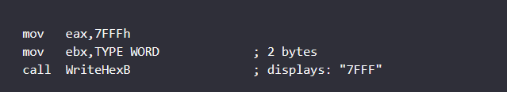

chapter5
Chapter 5 (Procedures)
1. How does the stack work –last in first out.
2. What is the difference between the runtime stack the stack abstract data type (ADT).
Runtime Stack (32-Bit Mode)
The runtime stack is a memory array managed directly by the CPU, used to keep track of subroutine return addresses, procedure parameters, local variables, and other subroutine-related data.
In 32-bit mode, the ESP register (known as the stack pointer) holds a 32-bit offset into some location on the stack.
We rarely manipulate ESP directly; instead, it is indirectly modified by instructions such as CALL, RET, PUSH, and POP.
PUSH OPERATION
DECREMENT the ESP ( stack pointer) by 4 hex ( 32 bit)
POP OPERATION.
return a copy of the value in the stack where ESP pointing too and increment ESP by 4
EBP
(frame pointer) point to the data on the stack
5. The PUSHAD instruction
The PUSHFD instruction pushes the 32-bit EFLAGS register on the stack, and POPFD pops the stack into EFLAGS:
The PUSHAD instruction
pushes all of the 32-bit general-purpose registers on the stack in the following order: EAX, ECX, EDX, EBX, ESP (value before executing PUSHAD), EBP, ESI, and EDI. The POPAD instruction pops the same registers off the stack in reverse order.
PUSHA instruction, pushes the 16-bit general-purpose registers (AX, CX, DX, BX, SP, BP, SI, DI) on the stack in the order listed. The POPA instruction pops the same registers in reverse.
6. What is the scope of a label within a procedure
they are local variable which mean if you define a jmp outside of the procedure, you can't jump to it unless it is a global Label
7. The RET instruction
RET forces the CPU to return to the location from where the procedure was called
ex:
call WriteString
do sth here. - < return sent the EIP to here to execute next instruction after the call
WriteString PROC
...
WriteString ENDP
8. A nested procedure call
10. The USES operator, coupled with the PROC directive

follow the order in uses from left to right for push and pop if not used with use
Irvine
library
Clrscr ( clear the console window)
CRLF ( next line)
DumpRegs ( show register)
RandomRange ( random integer with the range of 0 to n-1 depend on eax value), the random integer is returned in EAX
in range from 0 - 4999 and place it in randVal
Randomrange generate a random value base on 0 to eax value
ex from -50 to 49
WriteChar ( use al)
writeDec (use eax) for decimal
writeHex( use eax) for hex but it will display like the full 32 bit hex value; example mov eax, 7Fh -> display "0000007F"
writeHExB (use eax for value, EBX type format )

WriteInt ( eax) for signed 32 bit integer
writeString ( use offset of edx)